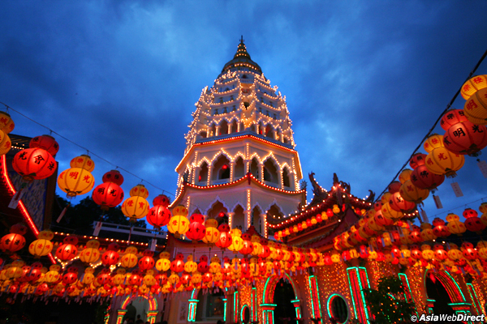

Our guests will begin their journey by going to the Penang Art Gallery &State Museum which is allocated at Lebuh Farquhar; additionally, it’s one of the most popular attractions in Malaysia. The building which houses the museum was built in 1821 and it was the former site of the Penang Free School which is the oldest English school in South East Asia. Generally, it showcases old photographs, maps, charts, historical relics, paintings of early Penang. All of the showcases provide visitors an insight to the history of Penang.
*It’s closed on Friday and will be replaced by the Fort Cornwallis.
The Fort Cornwallis is an old star-shaped fort. The Fort Cornwallis is the largest standing fort in Malaysia. The Esplanade, next to the fort, is a popular waterfront promenade which stretches from the hawker stalls at one end to the clock tower at the other. The central in the Esplanade is a Padang which is a huge square of town green. Also, proudly standing beside the Esplanade, the City Hall is a stately colonial building which is a fine example of British Palladian architecture.
After that, guests will be taken to the Peranakan Baba & Nyonya Mansion which was a prominent community of acculturated Chinese unique to the part of the world, especially in the Straits Settlements (Penang, Malacca & Singapore). At the Pinang Peranakan Mansion, the typical home of a rich Baba of a century ago is recreated to offer a glimpse of their opulent lifestyle and of their many customs and traditions. With over 1,000 pieces of antiques and collectibles of the era on display, this Baba-Nyonya museum is also housed in one of Penang’s heritage mansion of eclectic design and architecture.
Next, our guests will stop by the side of Kapitan Keling Mosque Street formerly known as Pitt Street and earlier day it is known as The Street of Harmony due to the main places of worship like St George Church, Kuan Yin Chinese Temple, Sri Mahariammam Hindus Temple and Kapitan Keling Mosque. Penang’s oldest Hindu temple which was built in 1883, is filled with colorful statues of Hindu deities. Among the priceless possessions of this ornate building is a statue of Lord Subramaniam richly decorated with gold, silver, diamonds and emerald. During Thaipusam festival, the statue is taken on a chariot procession by Hindu devotees.
Kuan Yin Temple is the next place that guests will proceed to. This temple is also known as the Temple of the Goddess of Mercy. This popular Taoist temple is located close to the Kapitan Kling Mosque. Believed to be the oldest temple in Penang, it was built in the 1800s by early Chinese settlers. Kuan Yin was a being who had actually attained Nirvana but stayed behind to save those souls who did not escaped the world of suffering.
Lastly, guests will have chance to purchase some local products at Local Products Centre and some chocolates at Cocoa Boutique.
| 14:00 hrs. | Schedule |
Pick up from hotel Place to visit:
Transfer back to hotels |
||||
|---|---|---|---|---|---|---|
| 01/04/14 - 31/03/15 Heritage Tour + Trishaw Ride + Night Market Tour (7-8 Hours) Rates per person in Malaysia Ringgit |
|
|---|---|
| Adult Price | Child Price |
| RM 175 | RM 105 |
|
Restriction:
|
|